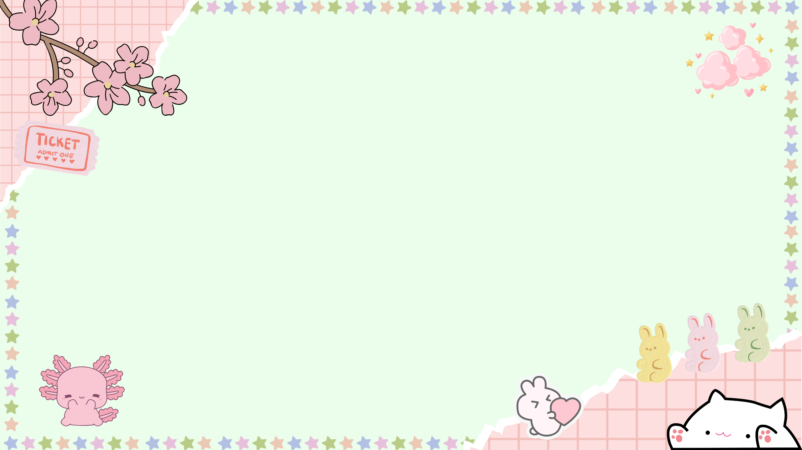
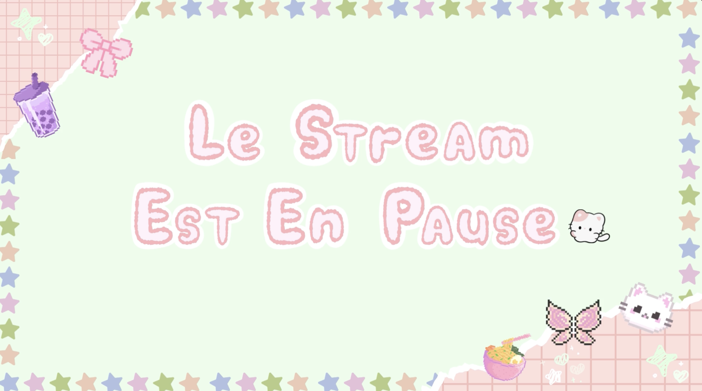
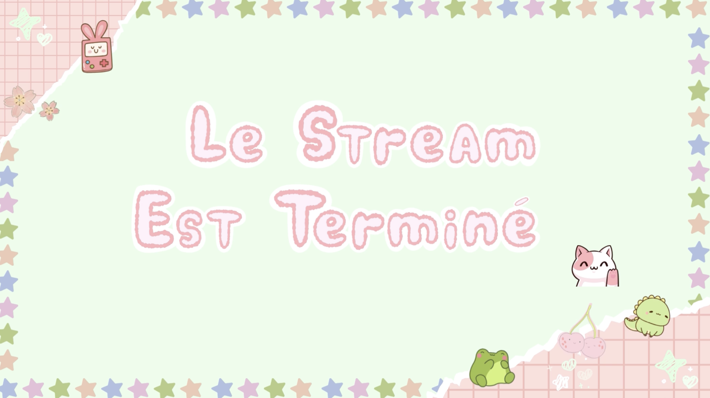
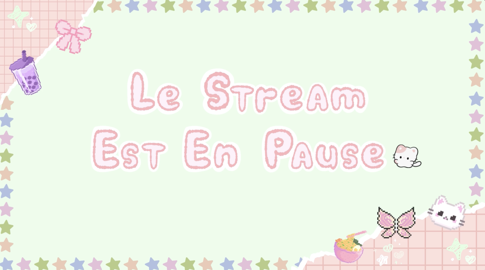
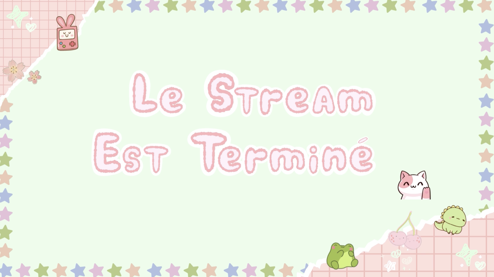
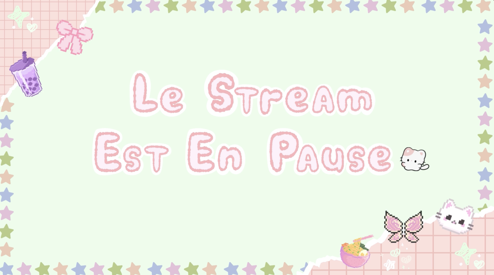
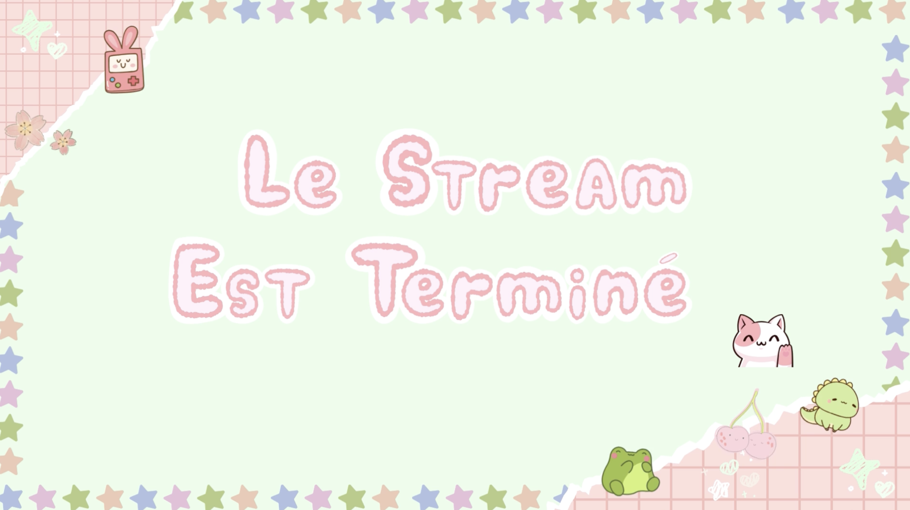

Overlay Twitch

 





Contexte Projet:
Ce projet était un projet personnel car j'avais besoin de différentes scène pour Twitch.
Outil(s) Utilisé(s):
J'ai utilisé le logiciel Canva
Procédé de Création:
Ces scènes m'ont prit beaucoup de temps à être réalisé car je ne savais pas quoi faire, et j'avais du mal à trouver réellement quelque chose qui me correspondait. Ce que j'ai fais, c'est donc que j'ai testé différentes compositions en y allant au feeling et voir ce qui me plaisait ou non.
Besoin Répondu:
Le besoin répondu, est que j'avais besoin d'une identité visuelle qui me corresponde.